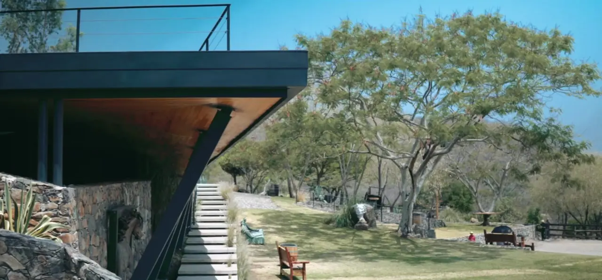
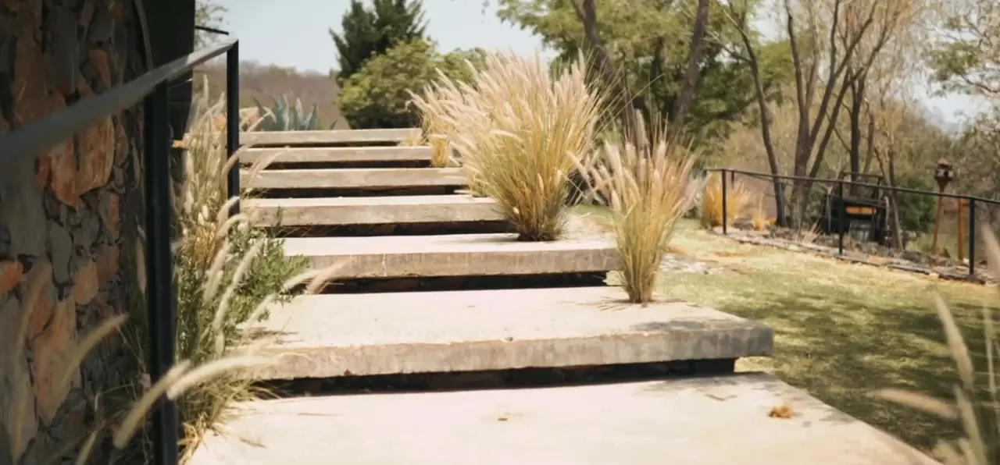
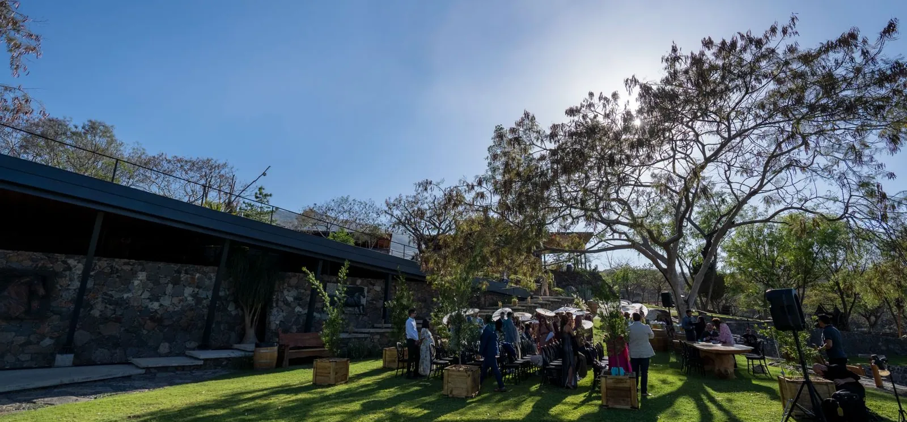
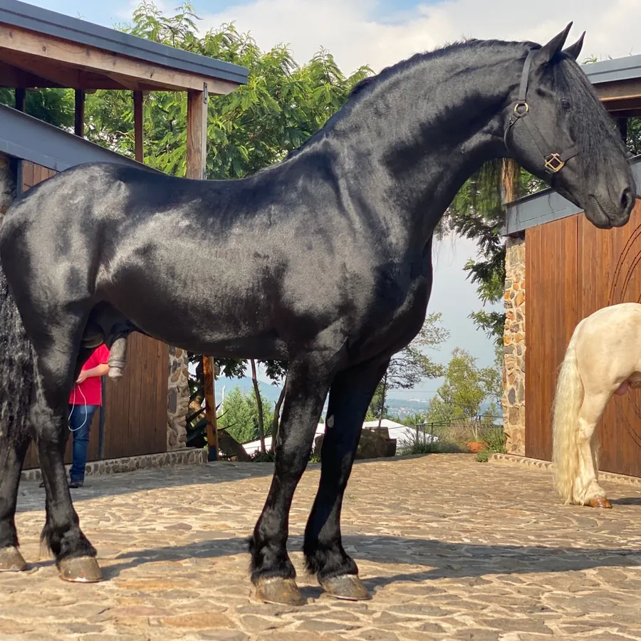
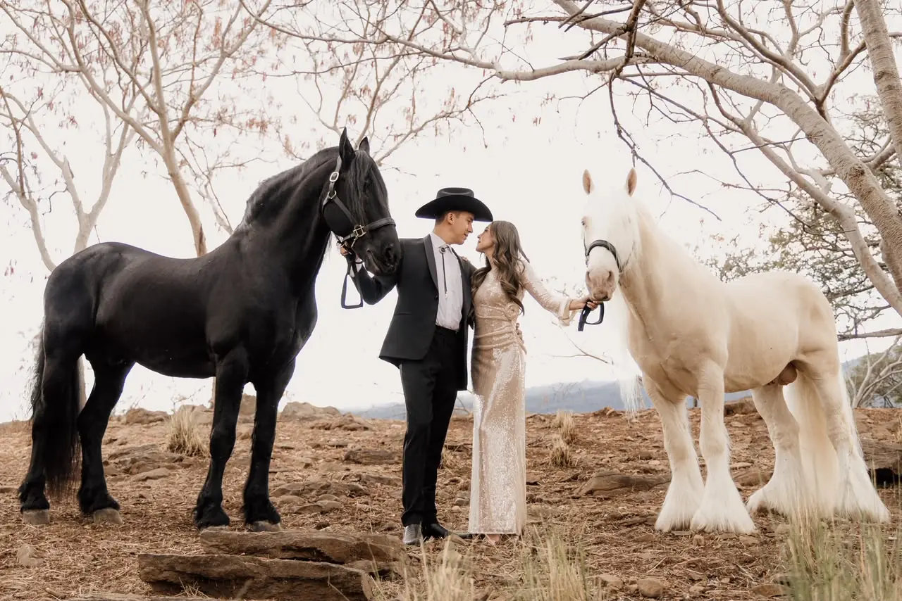
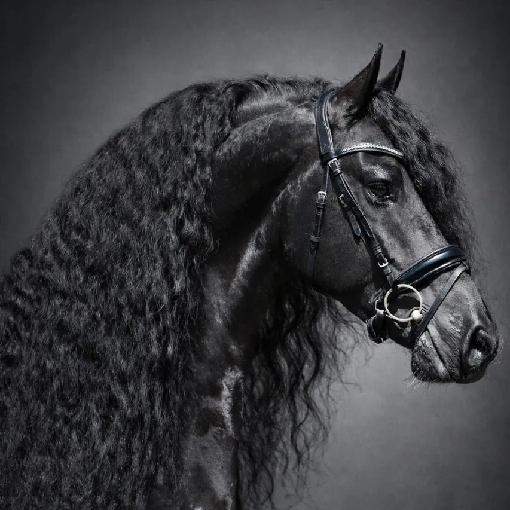
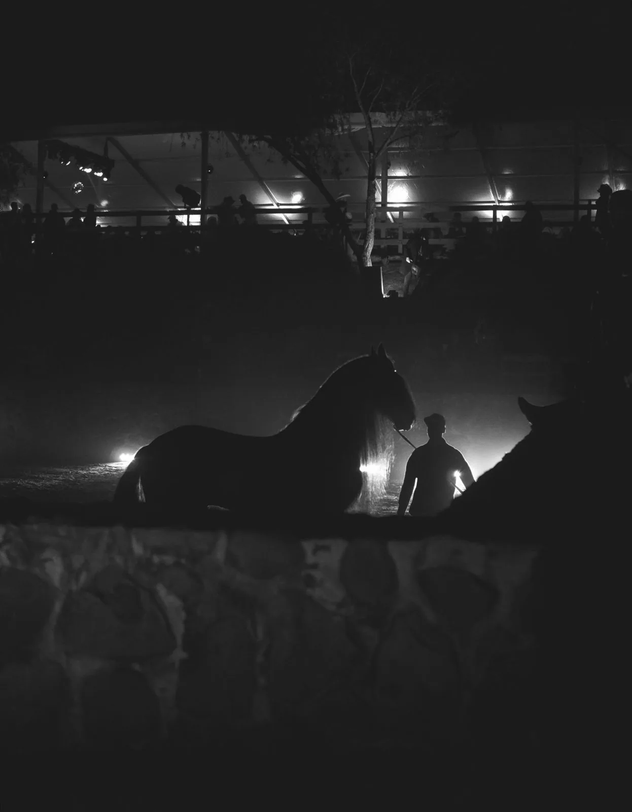

2012
Origen
Nace El Descanso como rancho privado en un cerro de San Miguel Cuyutlán.
Rancho El Descanso
01 · Manifiesto
Aquí primero es la naturaleza. Se respeta, y ella marca el ritmo.
Los árboles estaban antes que nosotros, y hemos plantado más de 1,000 más. Los venados siguen de paso. El tiempo se mide en temporadas, no en horas.
Criamos Friesian y Gypsy Vanner con calma, respeto y tiempo, para que haya nobleza en cada caballo.

02 · El origen
Buscábamos un lugar para criar caballos de calidad, con todos los cuidados que merecen, en un hábitat lleno de vegetación donde otros animales también pudieran vivir en libertad.
Lo encontramos en un cerro de San Miguel Cuyutlán, al sur de Guadalajara. Desde el principio, El Descanso fue también un mensaje: cuidar las plantas, la flora, la fauna y a los animales no es un lujo, es una responsabilidad.
Esa responsabilidad sigue creciendo: hasta hoy hemos plantado más de 1,000 árboles en el rancho.
Un espacio distinto, para renovarse. Para salir de la ciudad y volver, aunque sea un día, a las raíces.
03 · El nombre
des·can·so / sustantivo masculino
04 · Arquitectura
Cada árbol del cerro nació aquí mucho antes de que llegáramos. Por eso la construcción los rodea y los respeta, y sigue la forma natural del terreno.
Las rocas que salieron de la obra se quedaron en el rancho: hoy son las terrazas y los baños.




La misma que salió del cerro. Con los años se ve mejor.
Cálida y noble. Se curte con el sol y el tiempo.
Líneas rectas que se oxidan y ganan carácter.
Solo lo indispensable.
Una arquitectura pensada para envejecer bien: el México antiguo y la arquitectura moderna en el mismo trazo, integrada al cerro en lugar de imponerse sobre él.
05 · Dos razas
Estudiamos las razas del mundo y las que se crían en México. Todas tienen su belleza. Decidimos quedarnos solo con dos, y con los mejores ejemplares de cada una.

Por su majestuosidad y su nobleza.

Por sus colores y su carácter: el labrador de los caballos.
Caballos dóciles, que cualquier persona, incluso un niño, pueda montar con confianza.
Eso buscamos en cada ejemplar y en cada potro. Al Gypsy Vanner se le considera el caballo más noble del mundo; al Friesian, un caballo de majestuosidad y nobleza únicas.

06 · El semental
Nuestro primer semental con premios. Llegó en 2019 y con los años se convirtió en el Friesian más querido de México.
Es el Friesian con más potros registrados ante la KFPS en el país. Por su carácter y su nobleza, muchas familias lo sienten como parte de la suya.
Dato curioso: el semental y el representante del rancho, Nicolás Campero, comparten nombre. Pura coincidencia.
07 · Naturaleza
En El Descanso los animales viven en libertad y conviven entre ellos y con las personas.
08 · En cifras
09 · Línea de tiempo
Durante años El Descanso fue un rancho privado, lejos de la luz pública. En 2017 la KFPS de Holanda propuso hacer aquí la certificación de caballos Friesian. Aceptamos, con una condición: tiempo para preparar las instalaciones. Superó cualquier expectativa: Guadalajara habló de ella y el eco llegó a otros países.
Desliza →
2012
Origen
Nace El Descanso como rancho privado en un cerro de San Miguel Cuyutlán.
2017
I edición · noviembre
Primera certificación de caballos Friesian presidida por la KFPS de Holanda en el rancho. Nace La Experiencia Friesian.
2018
II edición
Segunda edición. El rancho se abre a eventos de mayor nivel.
2019
III edición
Llega Nico, el semental que se volvería el Friesian más querido de México.
2020
Pausa
Llegan los primeros Gypsy Vanner, con Blizzard. La pandemia detiene los eventos.
2022
IV edición
Regresa La Experiencia Friesian.
2023
V edición
Quinta edición de La Experiencia Friesian.
2025
VI edición
Sexta edición de La Experiencia Friesian.
2026
Inspección KFPS
Dusse Van, Campeón General. Mens, Campeón de Reserva. Ygram, tercer lugar.
2027
VII edición · 20 de noviembre
La Experiencia Friesian vuelve al rancho. Conócela →

10 · En voz de
“Queremos que cuando llegues sientas paz. Que sientas descanso.”
11 · Personas
Criadores, jueces, jinetes, artistas, familias y amigos. Cada persona que ha cruzado la entrada ha dejado algo en este rancho, y estamos agradecidos con todos.
Directora General
Director Comercial y de Ventas
Arquitecto
Galería
Desliza →



